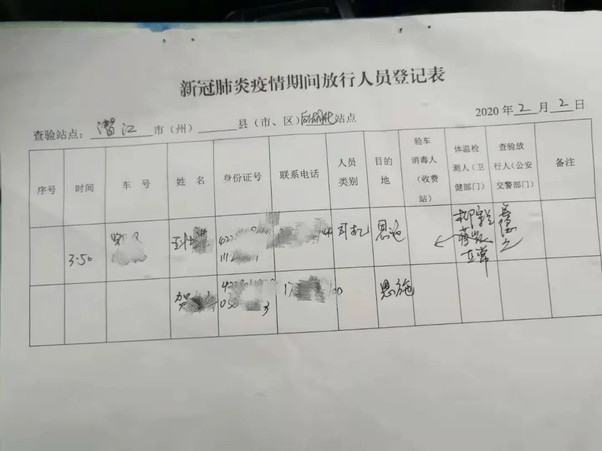
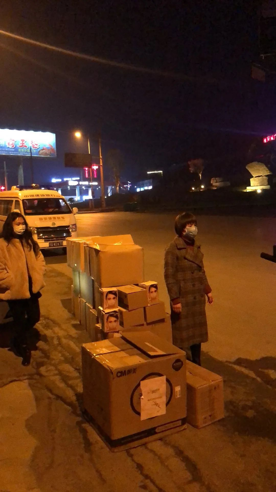
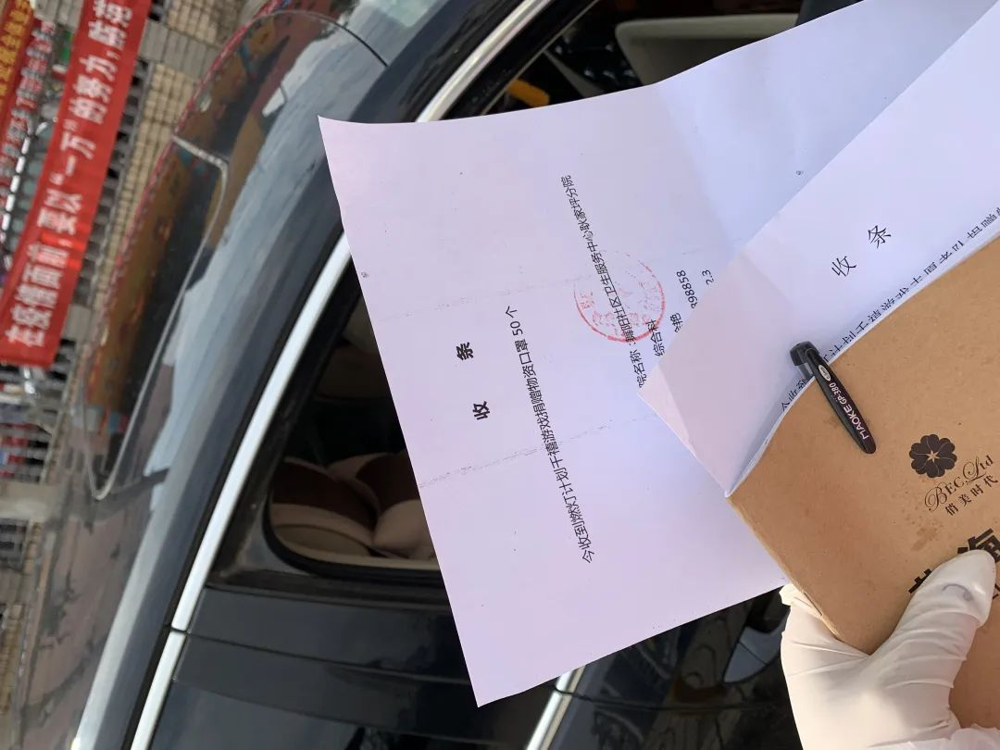

我在国外抢口罩
原文链接 备份链接 从搜集到运输，每一个关卡都会出现意想不到的困难。经历了被提价、被毁约、被骗等种种意外之后，海外华人机智地趟出了自己的线路。但情况瞬息万变。仍然有一些海外物资，因为各种各样的原因，还在赶往武汉的路上，不知何时抵达。 …


- 疫 情 之 下 -
刘韶山有个愿望，等疫情结束后和这群绝大多数从未见过面的“志愿车队”车友们聚一聚，喝个酒，他在群里说：“疫情结束后，我们的故事才开始。”
”
1月25日大年初一，为解决湖北非省会城市的物资紧缺问题，来自各行各业的两百多名志愿者组建起 “燃灯计划”组织。他们发挥各自专业优势，在两天的时间内登记了湖北各个地市级医院633条物资需求信息，并一棒棒接力，打通了募捐、采购、存储、运输等各个环节。
他们不计报酬地热情工作，也时常因身体超负荷和被外界误解而情绪消沉。
“我自己创业时也算够拼的了，可都没有像现在这么忙过。”采购志愿者白白说。体内有囊肿的她近来开始心悸、胸闷、头疼、耳鸣，也因物资没有及时到位而遭受责备。但她觉得没办法放弃，“如果不做这些事了，那么多医院怎么办，我们看不下去啊！”
来自武汉周边城市的求救声
青年编剧迪奥岑出乎意料地成为了“燃灯计划”创始人之一。她的表哥在广州经营一家纺织品及服装原料辅料批发公司，1月23号一早，表哥一行三人就从广州出发，开了30多个小时的车，将采购的37万只口罩和一批消毒液送到了老家荆州市的疾控中心门口。

1月24日，迪奥岑表哥把37万只口罩拖运到荆州疾控中心门口。
24号下午，迪奥岑发了一条朋友圈：“刚刚让我哥给留了50只，还没有口罩的找我，普通口罩，非N95，不包邮，口罩免费。”这句话正好被朋友圈好友、社交平台大V“兔撕鸡大老爷”看到了。
他把迪奥岑和表哥的事迹发到了网上。短短一小时，几百人加了迪奥岑的微信求赠口罩，有医务工作者也有普通百姓。跟这些人聊天后，迪奥岑惊讶地发现武汉周边城市物资紧缺的程度也触目惊心，这是她第一次真实听到了“来自一线的求救声。”
迪奥岑先建了一个“武汉周边城市互助微信群”，把有物资需求的医院都拉进来，通过沟通排查，她迅速整理出一份“武汉周边城市医疗物资求助清单”，发到朋友圈里呼吁：“你们要知道，武汉周边的小城市，疑似感染人数比各个省份加起来都要多，希望大家多多关注我们！”
迪奥岑2018年大学毕业，工作一年内跳槽了十多次，“没办法，待不住。”而在这时，她开始主动联系这些前老板们，拿着“物资清单”挨个求助了一遍，把他们加到互助群里。在大V“兔撕鸡大老爷”的帮助下，一两天时间，群内志愿者人数已经拓展到两百多人。
志愿者们身份各异，有公司高管，有大学老师，有海外华人，有农家乐老板，有卖烧烤的大叔，有保险销售员，有开美甲店的小姐姐，也有微商的代理人。
“兔撕鸡大老爷”觉得虽然人多，但缺少一个核心组织者，于是联系了互联网产品经理马力，马力人脉圈也很广，本身就运营着一个有77个产品经理的群。机锋网创始人谈毅也加入进来，进群后开始负责整体的领导协调工作。
1月25日大年初一，大家商量后为这个互助组织起了个名字：“燃灯计划”——寓意帮助解决湖北那些非省会城市的医疗机构物资紧缺问题，防止“灯下黑”。
从1月25号到27号，他们累计登记了湖北各个地市级医院633条物资需求信息。为了提高物资流转效率，他们迅速将群内的志愿者分为“采购组”“募捐组”“物流组”等若干小组，并在湖北各个地市搭建了“临时仓库”，物资到达后，各个地区依靠招募的车队志愿者，将物资转运到各个医院。
频遭质疑的物资采购
迪奥岑主要负责的是寻找货源。国内医护物资生产厂商已经供不应求，且不少厂家已经被政府接管征用，她便把目光放在了海外。从来没有从事过海外贸易的她，一开始踩了不少坑，费心尽力买一批货回来，却因为不符合医护要求而无法捐给医护人员使用。
此前她经过一位朋友介绍，找到澳洲一家口罩生产厂商，“老板不仅没有坐地起价，而且自掏腰包捐了一万元人民币。”可是，由于自己英文专业水平不强，她本以为这批口罩是不带阀门的，下单后仔细看说明书才发现里面没有“防液体喷溅”字样，这意味着这批口罩物资无法提供给一线医护工作者。一家香港公司想要认捐，沟通后决定将这批口罩捐赠给福利院老人以及环卫工人等。“做民用也算是一个不错的结果，但我现在最主要还是想解决一线医护人员的燃眉之急。”
为了避免再犯同类错误，她天天拿着翻译器在各国语言的说明书上寻找“防液体喷溅”这个专业术语，实在搞不定，她就发朋友圈求助，后来她专门组建了一个小语种翻译志愿者群，有需求就把信息发到群里求助。
货源搞定后，她还要了解各种海关进口的手续和流程，填写通关文件，处理外贸问题，“我朋友开玩笑对我说，等疫情过了之后，你可以去开拓海外贸易生意了。”
由于时差，迪奥岑经常在半夜回复信息，尤其是在刚上手几天，一天只能睡四个小时。高强度的用眼让她得了急性结膜炎，眼睛红肿得让妈妈吓了一跳。妈妈心疼她，而她又不忍心放弃，自己觉得快要崩溃了，躲在卫生间里大哭了一场。随着采购事宜越捋越顺，她才承诺家人，会在夜里一点前去睡觉。
与迪奥岑一样，白白也经历了同样的崩溃时刻，“我自己创业时也算够拼的了，可都没有像现在这么忙过。”
白白的母亲是国家二级营养师及民间食疗达人，2017年年初白白辞职，跟母亲一起做起了“辣酱生意”，后来又开了米粉店。由于身体过度劳累，白白在2019年年末查出体内有一囊肿，被强行要求休息调养身体。
大年初二，谈毅找到她时，她刚刚从江西南昌老家返回北京。她进群后就被群里各个地县级医院物资紧缺的信息吓到了。“湖北黄冈下面的蕲春县，有一个医院院长说，现在院里的医护人员都在裸奔，没有口罩没有防护服。我从字里行间感觉他都快要哭出来了。”白白甚至还看到有医院在求助成人纸尿裤：“他们根本舍不得脱下防护服去上厕所，都是穿着纸尿裤进去的，不吃不喝8小时，这让我心揪得疼。”
接手物资采购后的一周多时间里，白白每天都觉得自己要疯了——从早上九点到夜里两点，除了吃饭，其他时间都是抱着手机在拼命发信息沟通协调。“一天下来，常常感觉自己的眼睛要掉出来了，每次戴隐形眼镜时就感觉特别疼，根本戴不上。每晚到了11点多就开始心悸，胸闷，头疼，耳鸣……做公益太不容易了！”白白说。
为了节约时间，她连洗头洗澡都省去了，几天下来，N95、KF94、KN95、FFP3、FFP2……她对物资的型号和价格都倒背如流，“一次性医用口罩2块钱一个，N95口罩10块到20块，隔离服10块到20块，护目镜17块到27块，都属于采购的低价。”
“本来找货源就挺难的，好不容易找到符合标准的货源，已经付款准备发货了，突然就接到通知，被政府征用了；要么就是物流不接单了…..”各种临时状态考验着白白，更抓狂的是，认捐企业也会过来催问捐赠事宜。
某学校的学员曾经自发筹集资金，通过白白这里购买护目镜，定向捐赠给孝感市的几家医院。结果三四天过去了，物流单号迟迟没有反馈，有学员就提出质疑。募资负责人一遍遍催白白，白白则催厂家，事实上厂家也已经超负荷运转。白白说，每天花费在这方面的口舌也会让她心生委屈：“明明我们不收一分钱，不求任何回报，费心费力在做一件好事，为什么到后来会遭到怀疑？”
其实在做这件事情之初，就有朋友提醒过白白，这种民间行为风险很大，万一哪里没做到位，很容易招来质疑甚至举报。为此白白他们还特地请教过律师，可疫情当前，白白觉得“如果不做这些事了，那么多医院怎么办，我们看不下去啊！”
关卡重重的运输之路
在整个医护物资民间救济链条上，除“采购物资”外，“物流运输”这一环节也随着“武汉封城”、“湖北封省”变得越来越困难。1月25日起，顺丰等物流快递公司陆续发通知：凡是运往湖北省的其他物资快递只发武汉，非武汉地区暂无法配送。
孟黎管理着荆州市一家商业广场综合体项目，疫情发生后，她采购了三万双防护鞋套想捐给医护，当晚12点下订单，第二天一早就退回来了，原因是“物流无法配送”。跟厂家一番商量后，孟黎决定先让货物发到武汉，再派人去武汉拉货。
荆州距离武汉220多公里，可是就在准备去武汉的当天，荆州下了“封城令”，所有机动车辆禁止通行，他们只好又跑到防疫指挥部办理通行证，几番折腾后才把物资运送回来。

孟黎派人到荆州高速路口交接货物。
2月12日，孟黎协调组织的13吨酒精从山东运至湖北。
为了提高物流运转速度，孟黎很快拿出商场一万方的面积用作临时仓库，为各个民间救助物资提供中转运输志愿服务，并安排保安、保洁人员轮流值班。她已经陆续加了若干个民间救助群，只要有物流仓储需要，她就尽力协调安排。
紧接着，孟黎所在的集团也先后拿出武汉、天门等其他城市的商业地产用作医护物资中转仓，“这样效率就好很多，比如前几天有一批物资，里面有11000个口罩是送给荆州各大医院的，厂家可以直接发到我们这个临时仓库。其他地区的物资也可以通过我们这里转运，我们把物资拉到高速路口直接交接。”
恩施土家苗族自治州位于湖北省西南部，距离武汉将近800公里，州内几乎都是山地，相较于湖北其他城市，偏远的位置及不利的地形使得这里的医护物资运输更为困难。而截至2月9日，恩施已经确诊了将近200例新冠状病毒肺炎患者。
刘韶山加入“燃灯计划”志愿组织后，就梳理出恩施当地100多家医院的物资需求信息，很快他成为恩施地区协调小组的组长，他几乎每天都是从早上八点忙活到晚上一两点，一天下来电话要打上百个。
2月1日，他接到消息，有9000个口罩从潜江发到荆州临时货仓，需要他安排一名司机师傅从恩施跑一趟荆州，把物资拉回来分给恩施各个医院。他在恩施当地的“志愿者车队”群里问：“谁愿意去？”很快就有十多个人响应，最终刘韶山在组员的推荐下，选择让王壮谟去。
接到任务时，王壮谟正在距离恩施市区16公里外的龙凤镇家中，当天下午五点多钟，他赶紧开车去卫健委办理通行证。那时村里已经封路，他只好拿出自己报名志愿者的资料信息表示来意，经过一番核实后才放行，到恩施卫健委后再次遭到了同样问题：“你有官方盖章证明吗？”“如何证明你运送的口罩是用于捐赠而不是商用？”
情急之下，王壮谟把自己所有的信息资料，身份证、车牌号、家庭住址、公司经营执照、志愿者登记表格等一一出示，并一再表示“是为国家出份力”后，终于拿到恩施至荆州的通行证。

王壮谟拿到的通行证。
2号早上八点半，恩施下起了小雨，王壮谟出发前先到恩施中心医院拿防护服和口罩，以备到荆州时使用。“荆州算是疫情比较严重的地区，说实话我心里也挺害怕，只能多加小心。”
跟昨天一样，还没出城，王壮谟就已经被警察拦了两次。
第一次，他被两个女交警拦下，量体温、检查通行证，警车的后备箱车盖开着，一把雨伞下面放了台笔记本电脑，用作来往车辆人员信息登记，而警察就站在雨里淋着身体执勤。
第二次，过一个十字路口，又被警察拦下，那位警察只戴着一幅普通口罩，雨已经把口罩全部淋湿了，风一吹口罩全部贴住了嘴，连说话都很吃力。听说王壮谟是要去拖运口罩，这位警察很是希望他能赠送几副口罩。王壮谟看他站在雨中的样子，几乎难受地想要流泪，于是赶紧在“志愿者车队”群里发了条消息，一个小时之后，另一位张姓车友把口罩给这位警察送了过去。
恩施到荆州大约300多公里，四个多小时的车程王壮谟一刻也没敢耽误。中间只在两个服务区做短暂停歇，服务区里稀稀拉拉停着五六辆车，提供的餐点也只有方便面。王壮谟时刻注意，水龙头的开关、厕所的门把手都没敢直接触摸。
中午12点多，王壮谟马上要抵达荆州时，突然接到刘韶山的电话——由于交通管制，那批物资无法到达荆州，只能从潜江拖货。这不仅意味着要多跑100多公里才能接上物资，更需要花费不少时间和精力去接受一道道路口关卡的交通检查。
单单在荆州高速路口，王壮谟就耽误了一个多小时。二十多辆车在排队等待消毒，司机师傅挤在一个棚子里登记信息，王壮谟很怕交叉感染，穿好防护服戴好口罩才敢下去。
下午两点多，王壮谟终于开到潜江，他按照导航奔着城区而去，却发现几乎所有的进城路口都被钢管封住，车辆无法通行。他赶紧打电话给潜江本地朋友求助，在朋友的打听下，他找到了唯一一个可以进入潜江市区的路口。他再次遇到了一番询问盘查，在打了若干个电话，一一查验各种资料信息后，终于放行。
装好物资，王壮谟就往回赶。到恩施已是晚上，城里下起了大雾，能见度低，又是山路回环，王壮谟更加小心，不敢开太快，直到晚上将近9点多，这批物资终于拖了回来。一路下来，油费过路费总共1000多块钱，全是王壮谟自掏腰包，刘韶山本来想用募捐的资金给报销掉，但被王壮谟拒绝了。

晚上八点多，英子姐还在等待物资。
运回来的物资放到了英子姐自家小区楼下的一辆面包车上。英子姐从2014年起做女性私护用品的微商代理，六年下来，她已经有了自己稳定的团队和营销渠道，2018年她还加入了恩施留守儿童关爱保护协会，点对点资助当地一些贫困儿童。
疫情发生后，她很快就被拉入各种民间救助群中。胆大心细的她自告奋勇把家里的面包车拿出来作临时中转仓库。那9000只口罩运抵后，英子姐就按照各医院的发放数目整理好，第二天一早，利川、巴东、来凤等县乡各医院的医护人员就陆续前来领取物资。“他们物资真的很缺，不少医院都是开两个多小时车，只为领20个口罩。”

医院开给英子姐的物资接收函。

恩施来凤某医院从英子姐处领走物资。
由于每天接触大量医护人员，英子姐都是防护服、护目镜、口罩全副武装，为了不浪费这紧缺的医护物资，英子姐穿上后就不得不一直待在楼下，怕邻居路过询问，她时常会搬个板凳坐在快递柜后面，不一会儿就冻得瑟瑟发抖，晚上上楼回到家自己累到不想说一句话。

英子姐全副武装。
前两天，家里儿子突然烧到37.2℃，英子姐心头一紧，“如果家人、小区里的人传染了，那我就是罪人了！”说着，她忍不住抽泣起来。
在援助中找回生活的 “意义感”
并不是所有的志愿者都能坚持下去。连轴转的工作强度以及对能力专业度的要求，使不少人中途就退出了。
白白之所以拖着疲惫的身体坚持在做，是觉得受到了“正向反馈”。这几天，群里再也不像前段时间那样天天有医院在发求助信息刷屏了，这种改善让她觉得自己做的事情能切切实实帮助到他们。“身体再累，我也想再坚持一下。”
白白接受到的“正向反馈”。

某乡镇医院感谢白白的爱心志愿服务。
刘韶山则是觉得找到了“意义感”。他在2014年开了家汽车装饰用品店，这五六年下来，投入和收入始终不成正比，又碰上这两年的经济不景气，2019年年底他下定决心关了店面，入职保险公司做销售。他没想到，在职业上未曾有过的“成就感”，在这段时间里体会到了。“当你能真正帮助到一个人的时候，你就会觉得做这件事情很了不起。”
疫情还在持续，人们都在盼望春天。过不了多久，这些因为爱心而聚集在一起的人们又会回到自己的生活和工作中去。
刘韶山有个愿望，等疫情结束后和这群绝大多数从未见过面的“志愿车队”车友们聚一聚，喝个酒，他在群里说：“疫情结束后，我们的故事才开始。”
迪奥岑最近已经开始远程办公，她一边跟进着工作上的短视频策划项目，一边则构思着下一步的公益行动。她觉得这场灾难总会有过去的那一天，但那些在疫情中失去亲人的群体，心灵上的创伤却会一直都在。
在她认识的志愿者中，有一个叫万庆的四川商人，舅舅因为新冠状病毒肺炎感染而去世，父母及所有亲戚都被隔离。悲痛之下，万庆调动所有资源，亲自组织物流车队，给老家孝感捐赠了100万只国标医用口罩，而且现在还在陆陆续续给其他城市采购运送物资。“你说，像万大哥这样的人，他根本不缺钱，可是亲人走了，心里那道坎怎么过呢？”她想找些人，来做一个长期的温暖计划，关注并帮助这些受到心理创伤的人。
白白则在盘算着自己的辣酱生意，她想节后先捐赠一批辣酱，“湖北人也挺爱吃辣的”。年前她刚租了两个新店面，已经付了租金，原本打算节后开始装修，现在只能等。
“账面上的资金最多还能撑两三个月。”不过有了这次经历，她总觉得天无绝人之路，“好人应该会有好报吧？”
（应采访对象要求，迪奥岑、白白、孟黎、英子姐为化名。亦感谢“燃灯计划”志愿者臧新宇、罗先生提供的采访资料）
-END-
图文 | 陶叶，想用文字追赶时间。
华中科技大学出版社·武汉战“疫”数博馆
抗击新型冠状病毒感染肺炎疫情作品资料正在征集中——
【征集要求】
＊来稿应为未公开发表和出版的内容，题材不限，
VLOG、文字、图片等均可，务必客观真实，
反映疫情当下的民生现况及个人见闻；
＊提供作品者都将获得华中科技大学出版社提供的“宅家悦读大礼包”；
＊作品一旦录用，将提供完整规范的版权保护。
【投稿方式】
音视频：2279281426@qq.com
文字：423322329@qq.com
图片：454578039@qq.com
或点击下方链接直接投稿
http://2019ncov.xiushewang.com/
请务必留下真实姓名及详细联系方式。
“我故”故事练习生培养计划，详情请戳：

About us
主编：鹿｜本期编辑：鹿
Contact us
投稿/商务合作/咨询
微信后台留言 or 邮箱：wmsygsdr@163.com
**我们是有故事的人｜华中科技大学出版社官方故事平台**
原文链接 备份链接 从搜集到运输，每一个关卡都会出现意想不到的困难。经历了被提价、被毁约、被骗等种种意外之后，海外华人机智地趟出了自己的线路。但情况瞬息万变。仍然有一些海外物资，因为各种各样的原因，还在赶往武汉的路上，不知何时抵达。 …
原文链接 备份链接 向风暴眼输送防护物资并非易事武汉市中心医院医生发布微博求助，希望社会各界捐物资。图源：微博截图 2月12日晚，武汉中心医院的一位医生在微博发出求助。 这位身穿防护服的医生对镜头说，医用N95没有了，只能戴工业口罩，医 …
原文链接 备份链接 医院人员领取志愿者送的医疗物资。受访者供图 文 | 李晓芳 编辑 | 胡大旗 新型冠状病毒肺炎疫情扩大后，湖北省内的医院医疗物资告急。从1月23日开始，很多医院自行发布物资募捐公告。几乎同一时间，各种民间力量行动起来， …
原文链接 备份链接 ********** *****现在，志愿者们已经对各类口罩如数家珍。1月底，一家东莞工厂表示有一批口罩。“那是工业级别的N95，不能给医生用。”程雨拒绝了。“不能让热心被利用，也不能给医院制造麻烦。”她说。***** …
原文链接 备份链接 数据来源：腾讯新冠肺炎疫情实时追踪 截至2月3日早上7时， 全国新冠肺炎确诊个案16615例， 武汉确诊个案5142例。 根据1月31日湖北省疫情新闻发布会， 截至30日24时， 武汉地区共有6万余名医务工作者参与救 …